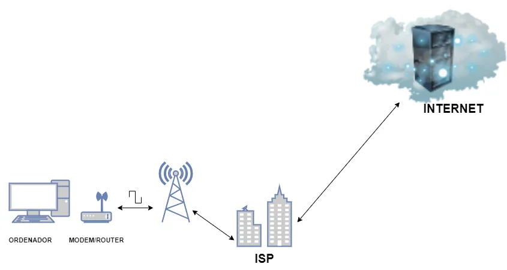
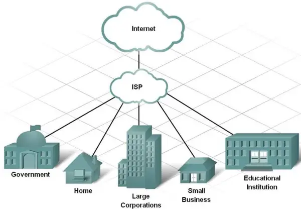
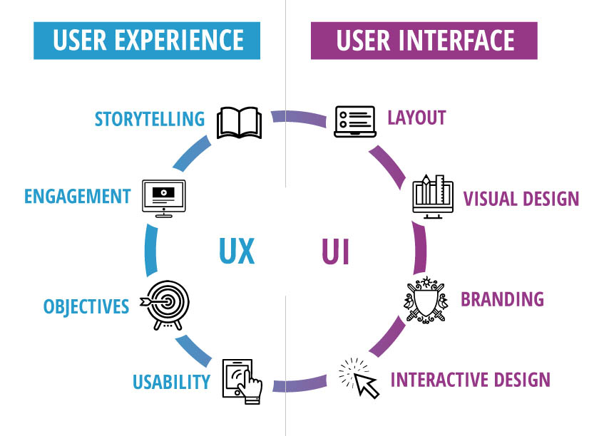
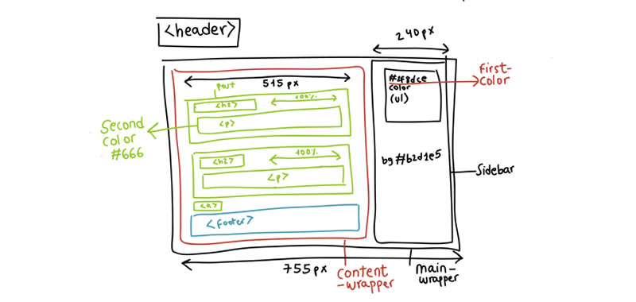
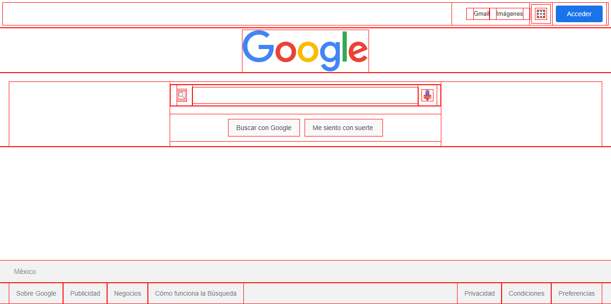

Índice
- Qué es internet?
- ¿Qué son los proveedores de internet?
- Tipos de proveedores de internet
- Carpeta local vs Carpeta remota
- ¿Qué es la experiencia de usuario Vs Interfaz de usuario?
- ¿Qué es maquetación web?
- ¿Qué es el modelo de cajas en HTML y CSS?
¿Qué es internet?
Internet es una red de computadoras interconectadas a nivel mundial que facilita el intercambio de información, servicios y recursos en tiempo real. Esta red funciona a través de un conjunto de protocolos de comunicación que hace posible la conexión entre dispositivos ubicados en diferentes lugares.
PARA CONOCER MAS HAZ CLIC AQUI¿Qué son los proveedores de internet?

Un ISP (Internet Service Provider o Proveedor de Servicios de Internet) es una empresa que te brinda acceso al internet. Piénsalo como un portal que conecta tu computadora, smartphone u otro dispositivo con el vasto mundo en línea. Los ISPs también ofrecen servicios adicionales como correo electrónico, alojamiento web y más. Al pagar una suscripción a un ISP, básicamente estás rentando su red para conectarte a internet.
PARA CONOCER MAS HAZ CLIC AQUITipos de proveedores de internet

ISP: Internet Service Provider
- Brindan conexión a internet.
- Telefonía.
- Televisión en algunos casos.
- Soporte, entre otros.
Carpeta local vs Carpeta remota

- Carpeta local: este es el directorio de trabajo, generalmente una carpeta del disco duro.
- Carpeta remota: es donde se guardan los archivos en el equipo que ejecuta el servidor web. El servidor web es a menudo (pero no siempre) el equipo que hace que el sitio quede en la web a disposición del público.
¿Qué es la experiencia de usuario Vs Interfaz de usuario?

La UX (User Experience), o más conocida a través del término UX, hace referencia a la experiencia que el propio usuario experimenta al visitar e interactuar con una solución digital, ya sea una página web o aplicación. De esta manera, el principal objetivo de la UX es garantizar la mejor experiencia posible al usuario y por ello, el diseño UX se centra principalmente en el usuario, anticipando y pensando siempre en sus necesidades, habilidades o incluso sus limitaciones.
La UI (User Interface) se encarga de que cada uno de los elementos que forman parte del diseño sean claros, se adapten a los diferentes sistemas operativos o dispositivos, y cumpla sobre todo con los objetivos principales, es decir, que sea atractivo, útil y mejore la experiencia del usuario en los diferentes productos digitales
PARA CONOCER MAS HAZ CLIC AQUI¿Qué es maquetación web?

Es el proceso de diseñar y organizar los elementos visuales y estructurales de una página web. Este proceso implica la disposición de texto, imágenes, gráficos, videos, y otros componentes interactivos de manera que se consiga una presentación estética y funcional en la pantalla del usuario. La maquetación web no solo se enfoca en la apariencia visual, sino también en la usabilidad y accesibilidad del sitio web.
PARA CONOCER MAS HAZ CLIC AQUI¿Qué es el modelo de cajas en HTML y CSS?

- En HTML, El modelo de cajas (o box model) es el sistema que usan los navegadores para representar y estructurar cada elemento HTML como si fuera una caja rectangular.
- Cuando hablamos del modelo de cajas en CSS, estamos haciendo referencia a un sistema que tiene el navegador de interpretar las diferentes partes de lo que solemos denominar «caja»: un elemento HTML con unas ciertas dimensiones.